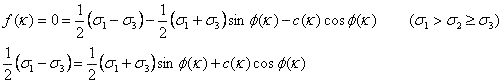
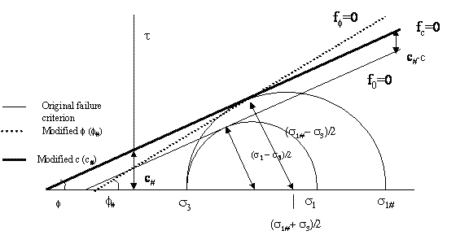
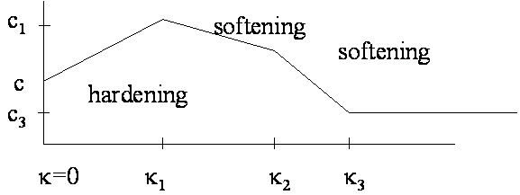

As an extra option to the Mohr-Coulomb model it is possible to apply variable friction or cohesion values, especially if the material hardens and/or softens during the plastic deformation.
The failure (plasticity) criterion is:

[Equation 1]
f(k) friction angle, variable with plastic deformation k [°]
c(k) cohesion, variable with plastic deformation k (MPa)
k plastic deformation [-] see equation 2
In the figure below we see that the plasticity function moves with deformation, since the maximum stress increases, while the minimum stress remains equal. This hardening can be simulated by either increasing the cohesion or the friction as a function of plastic deformation. Combined effects are not possible, so ff changes with f(k) and fc changes with c(k)
Both the new ff and the fc match the laboratory or field-observed hardening behaviour.
The user must supply 1 (linear) to 3 (trilinear) plastic strains at which new values of f and c are applied.
At elasticity, f<0. Stress combinations leading to f>0 are not possible, hence at plasticity not only f=0 but also S df/ds Ds=0, which determines the change in
If plasticity occurs, the type of deformation which takes place must be defined. Usually the plastic strain (tensor) is dependent on the stress (tensor).
The (derivative of the) deformation function is generally not equal to plasticity law, but similar in that the friction angle is replaced with a dilation angle y.

[Equation 2]

[Equation 3]
y = dilation angle [°]
The deformation can now be written (in main stress-strain notation):

[Equation 4]
The dilation under biaxial or triaxial conditions can be expressed as -ev/e1 = (e1+e2+e3)/e1 = - sin y/(½(1- sin y))

[Equation 5]
The intermediate stress s2 is hence of no importance to neither the failure criterion nor the deformation, which is in line with the shear plane approach.

Fig 1 representation of cohesion or friction hardening.
The (equivalent) plastic strain k is defined here as:

[Equation 6]

[Equation 6a]

[Equation 6b]

Fig 2 :
Example of hardening /
softening diagram
E and n (Young’s modulus [MPa], Poisson’s ratio [-])
Elastic parameters, which determine elastic shear and bulk response. The values should be derived from triaxial loading tests.
r (density [ kg / m3] )
Bulk density for gravitational calculations.
c and f (cohesion [MPa] and friction [°])
Used to define the failure and deformation mechanisms at initial plasticity conditions
c or f (cohesion [MPa] and friction [°]) with plastic deformation k
1 to 3 paired combinations of plastic strain k [-] and modified values of c or f to define strain hardening or softening.
y (dilation [°])
Used to define the relative amount of dilation during plastic deformation
SHtot/Svtot; Shtot/Svtot, SHtot-azimuth
Initial stress field (after gravity loading). SHtot/Svtot [-] is the highest horizontal/vertical stress ratio. SHtot-azimuth [º] is the clockwise angle between the SHtot direction and the Northing. Shtot/Svtot is the lowest horizontal/vertical stress ratio [-], perpendicular to the SHtot direction.
av (Volumetric Thermal Expansion Coefficient [°C-1 or K-1]
Relative volumetric expansion per degree temperature change. The value is three times the linear expansion coefficient, sometimes provided for solids.